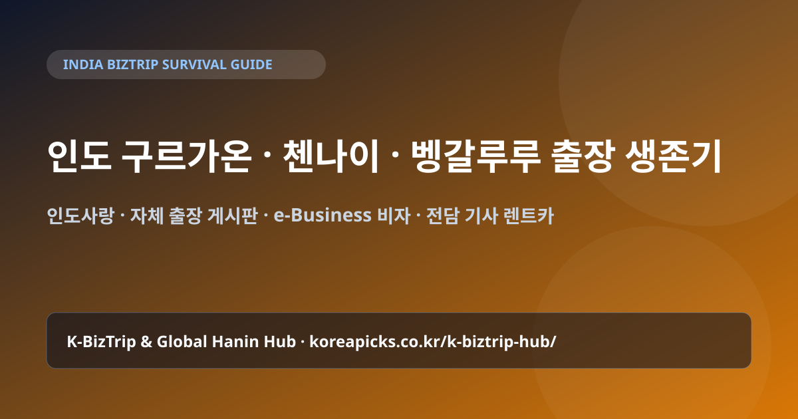

인도 구르가온(델리)·첸나이·벵갈루루 출장 생존 가이드 & 한인 네트워크 (2026)

1. 인도 4대 핵심 출장 거점 특징 요약
- 델리 NCR (구르가온 Gurugram · 노이다 Noida): 삼성전자·LG전자·포스코·현대차 인도 본사 및 한국 대기업 지사가 밀집한 비즈니스 1번지입니다. 인디라 간디 국제공항(DEL)에서 구르가온 사이버시티(Cyber City)까지는 차로 20~30분 거리입니다.
- 첸나이 (Chennai · 스리페룸부두르): 현대자동차를 비롯한 1~3차 자동차 부품 협력사가 집결한 남인도 최대 제조 거점입니다.
- 벵갈루루 (Bengaluru): '인도의 실리콘밸리'로 불리는 글로벌 R&D·소프트웨어·스타트업 중심지입니다.
- 푸네 (Pune) & 아메다바드 (구자라트): 자동차·배터리·중화학·물류 신흥 제조 벨트입니다.
2. 인도 e-Business 비자 준비 & 전담 기사 렌트카(Innova) 활용
인도는 무비자 입국이 불가능하며, 비즈니스 출장자는 출국 최소 7~10일 전에 공식 사이트에서 e-Business Visa를 발급받아 출력해 가야 합니다(영문 초청장·한국 회사 재직/파견 증명서·영문 명함 파일 필요).
현지 이동은 시내 단거리의 경우 Uber나 Ola 앱을 쓸 수 있으나, 공단 이동이나 바이어 연속 미팅 시에는 에어컨과 안전이 검증된 도요타 이노바 크리스타(Innova Crysta) + 전담 운전기사 일일 대절(8시간/80km 기준)을 이용하는 것이 모든 한국 기업의 표준 매뉴얼입니다.
3. 식수·위생 관리 & 한인 비즈니스 호텔/게스트하우스
인도 출장에서 가장 중요한 것은 컨디션 관리입니다. 양치질을 포함해 물은 반드시 밀봉된 정품 생수(Bisleri, Kinley, Aquafina)만 사용하고, 얼음이 들어간 음료나 길거리 음식은 피하세요.
구르가온(섹터 29, 골프코스로드)과 첸나이에는 한국인 매니저가 상주하며 한식 조식·현장용 한식 도시락·당일 세탁 서비스·공항 픽업을 패키지로 제공하는 검증된 한인 비즈니스 호텔과 레지던스가 잘 갖춰져 있습니다. 인도사랑 카페와 본 사이트의 인도 출장 게시판에서 최신 후기를 확인하세요.
✈️ 🇮🇳 인도 출장 준비 & 실시간 현지 게시판 바로가기
출장 항공권·비즈니스 호텔·현지 eSIM 비교와 함께, 현지 통역·전담 기사 섭외는 국가별 실전 게시판을 이용하세요.
자주 묻는 질문 (FAQ)
Q. 인도 입국 시 유심(SIM)이나 로밍은 어떻게 하는 것이 좋나요?
인도 현지 공항에서 Airtel/Jio 유심을 개통하려면 비자·여권 확인 후 개통 활성화까지 수 시간이 걸리는 경우가 많습니다. 단기 출장자는 한국 통신사 로밍이나 출국 전 인도용 eSIM을 미리 세팅해 가시는 것이 공항에서 기사님과 즉시 연락하기에 훨씬 안전합니다.
Q. 인도 현지에서 한국 카드로 결제가 잘 되나요?
호텔과 대형 쇼핑몰·고급 레스토랑에서는 비자/마스터 카드가 잘 되지만, 인도 고유의 QR 결제(UPI)는 외국인 카드 연동이 까다로우므로 톨비·팁·비상용 인도 루피(INR) 현금을 적당량 환전해 두세요.